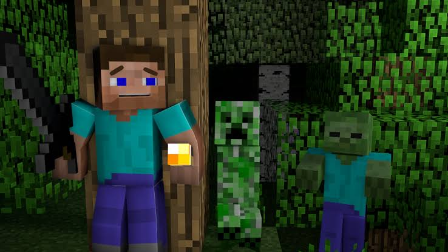

Wood, Stone and LOTS of Mistakes
September 29, 2026 by Ruth Reid
I only started playing Minecraft a few days ago, and I'm already attached. At first I had no idea how to play the game. I wandered around a field for ten minutes before realizing I had to punch a tree just to get wood. Once I figured out how to craft a table and a wooden pickaxe, things started clicking. Now I'm learning how to gather stone, find coal for torches and keep an eye on my hunger bar so I don't starve while exploring; which I figured out I had to punch animals to get meat to satisfy my hunger.
Hidden: My First Night in Minecraft
October 4, 2026 by Ruth Reid

The biggest surprise so far has been how quickly the night comes. On my second evening I was too busy digging and didn't notice the sky was getting dark, and suddenly zombies and skeletons were everywhere. I panicked and hid in a hole, then spent the rest of the night waiting for the sun to come up. It was scary, but it was also a little fun, and it taught me to build a shelter befre dark. I'm still a noob, as some would say, but I'm excited to keep learning and to build my first real house.